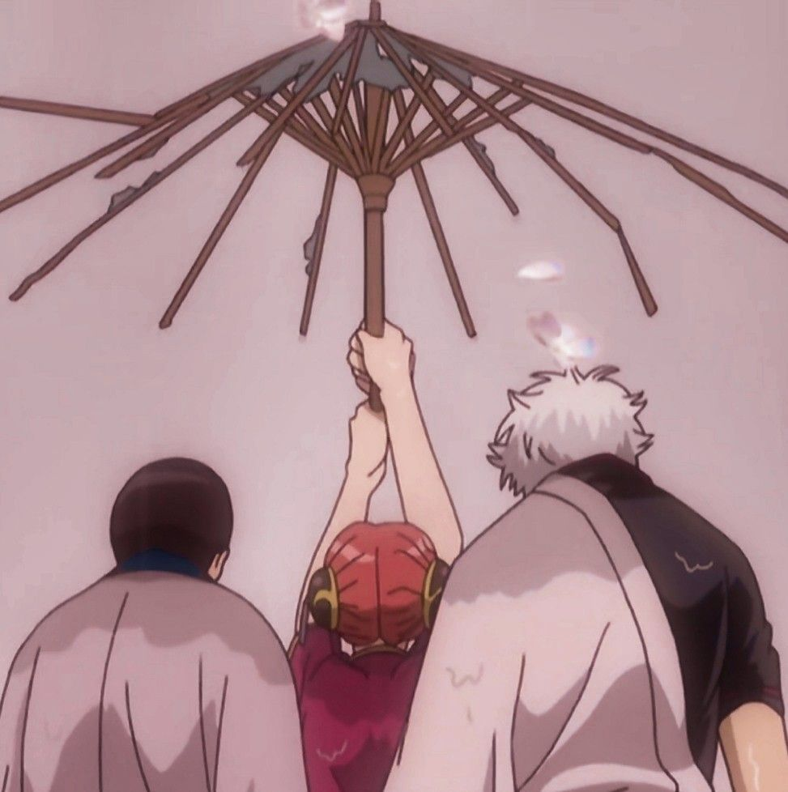
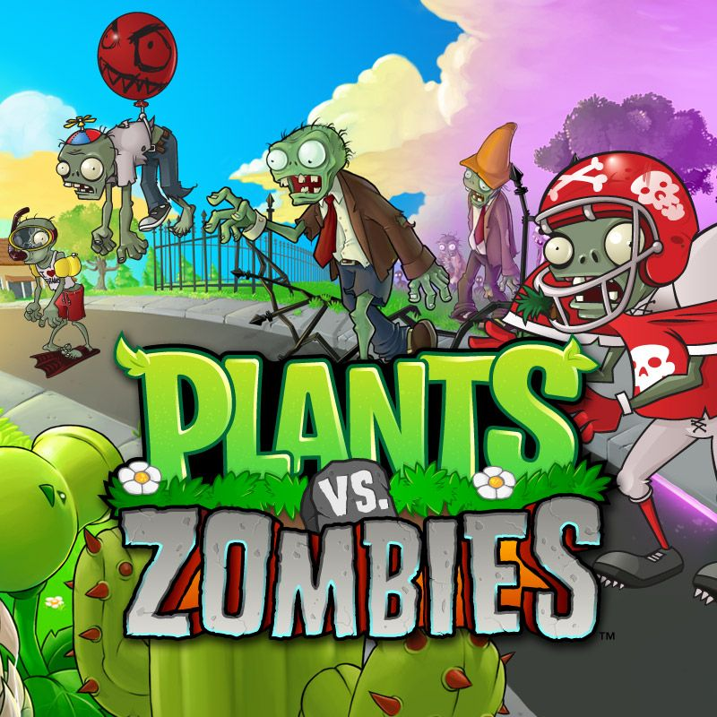
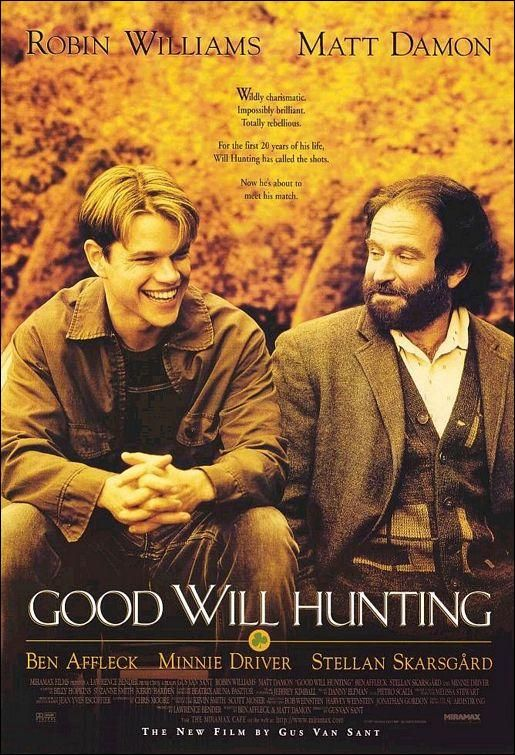

El rincón del descanso (Recomendaciones)

Anime & Manga:Si buscas animación de primer nivel, tramas envolventes o excelentes sistemas de combate, te sugiero echarle un vistazo a Jujutsu Kaisen, Black Clover, Mushoku Tensei y Gachiakuta.

Gaming:Mis pasatiempos favoritos para entrenar reflejos y coordinar estrategias: Clash Royale, Minecraft Java Edition y Free Fire (especialmente planeando salidas tranquilas de viajes de clan con el team).

Series y Cine:Mr. Robot (serie técnica fundamental para entender la ciberseguridad real) y la clásica saga de Matrix.